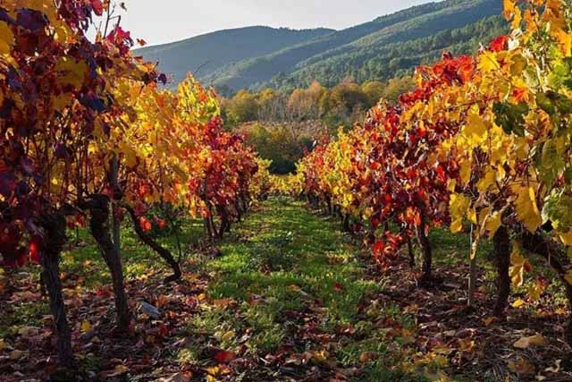
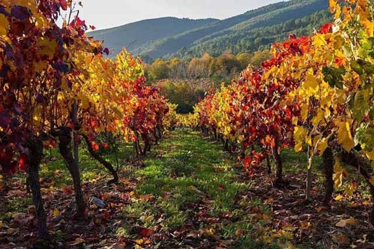
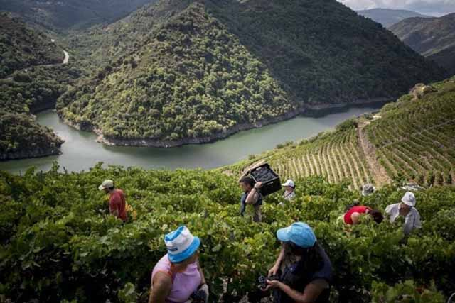
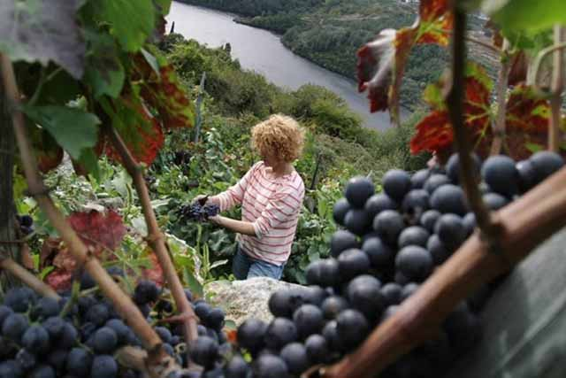

¿Quiénes somos?
La Asociación de Empresarios del Vino de la Ribeira Sacra "AsEViRiS" es una asociación sin ánimo de lucro que nace en 2013 con la finalidad de defender los intereses de las bodegas acogidas a la Denominación de Origen Ribeira Sacra en general y los de sus miembros asociados en particular.La Denominación de Origen Ribeira Sacra (aprobada en 1996 para proteger el origen, garantizar la calidad y promocionar los vinos de esta zona) agrupa vinos gallegos de prestigio elaborados en dicha zona con las variedades de uva loureira, treixadura, godello, dona brancay torrantés ( vinos blancos) y mencía, brancellao, sousón y merenzao (vinos tintos).
En el Consello Regulador de la D.O. Ribeira Sacra están inscritas en la actualidad más de 1.200 hectáreas de viñedo que cultivan, aproximadamente, 3.000 viticultores, embotellando el producto bajo el amparo de la D.O. un centenar de bodegas. La producción de uva dentro del Consello Regulador se sitúa alrededor de los 7.000.000 de kilos en uno de los paisajes vitícolas más espectaculares y bellos del mundo.
 

¿Qué hacemos?


Para conseguir esta finalidad, desde la Asociación nos hemos marcado los siguientes objetivos prioritarios:
- Velar por la calidad de los viñedos y los vinos con D.O. Ribeira Sacra.
- Defender las características particulares y específicas de los vinos amparados bajo la D.O. Ribeira Sacra.
- Representar y defender los intereses de las bodegas asociadas ante organismos oficiales.
- Potenciar y dar a conocer los vinos de la Ribeira Sacra como vinos de calidad, tanto en el ámbito nacional como internacional.
- Fomentar el asociacionismo, tanto local como nacional e internacional, como medio de defensa de los intereses comunes.
- Ofrecer asesoramiento individualizado a todos y cada uno de nuestros asociados.
- Impulsar iniciativas en diversos sectores, tales como comercialización, distribución, formación, turismo, etc.
Desde la Asociación se realizan acciones estratégicas para cumplir con estos objetivos, como son:
- Presentaciones específicas de las bodegas y vinos D.O. Ribeira Sacra.
- Formación complementaria para las bodegas, según las necesidades del entorno vinícola.
- RR.PP.: Difusión de información, notas de prensa, entrevistas, medios de comunicación, distribución, clubs de vinos...
- Viajes prospección de mercado a otras zonas vinícolas del mundo: Conocer otras realidades.
- Creación sistema comunicación inter-bodegas: Aprender y compartir experiencias.
- Estudios de mercado específicos: Progreso y mejora continua de la asociación y de sus bodegas.
- Internacionalización y adaptación continuada a los mercados: Análisis estratégico, otras posibilidades no contempladas por organismos oficiales...
- Materiales promocionales diversos: Guías, Visitas a bodegas, Cuadernos de catas, Pósters, Web...
Estamos abiertos, además, a cualquier proyecto, iniciativa o sugerencia que tenga como finalidad potenciar el cultivo, el conocimiento y el prestigio de los vinos con D.O. Ribeira Sacra así como su apertura a nuevos mercados geográficos.
¿Dónde estamos?
La Ribeira Sacra es una zona que comprende las riberas de los ríos Cabe, Sil y Miño. Está situada en la zona sur de la provincia de Lugo y el norte de la provincia de Orense, en Galicia, España.
La capital de la zona se convino que fuese la ciudad de Monforte de Lemos (LUGO).
Mapa de subzonas de la Denominación de Origen Ribeira Sacra
Ver a página completa